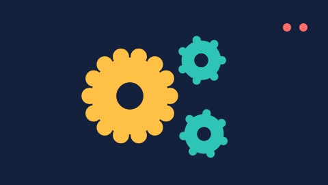

Choosing a format
The same timeline can be written in nine ways. They differ in where they play, what they can do and how big they get. The demo below is one export; switch the tabs to compare.


At a glance
| Format | Plays in <img> |
Interactive | Best for |
|---|---|---|---|
| SMIL | yes | links, button states, start on click / hover / visible / scroll | anything that just plays; the smallest file for tweens and shape tweens |
| CSS | yes | links, button states, pause or restyle from your page, scroll-driven (inline) | pages you control with CSS; smooth on weak devices |
| JS player | first frame only | everything: buttons, code snippets, sounds, play() / gotoAndPlay() |
interactive pieces, sound, banners with logic |
| Automatic | as chosen | as chosen | when you don't want to decide |
| Frames | yes (still) | – | design tools, sprite sheets, print |
| GIF / WebP | yes | – | e-mail and places without SVG animation |
| Lottie / .lottie | – | through the player's API | iOS, Android, Flutter, React Native, lottie-web |
SMIL
SVG's own animation elements (<animate>, <animateTransform>, <set>). Eases become exact keySplines curves, so a tween with one ease is one short animation — no frames. Shape tweens become one drawing whose path changes. It plays in every current browser, inside <img>, <object> or inline, and in many apps that show SVG.
Use SMIL by default. It is usually the smallest file and needs no script. Buttons get their Over and Down states from CSS, Go to Web Page snippets become links, and the start modes work (click and hover everywhere, when visible and on scroll where scripts run).
CSS
CSS @keyframes on each animated element, using the individual translate, rotate and scale properties, cubic-bezier() eases and linear() for curves that one bezier can't follow. Browsers run transform and opacity animations on the compositor, so CSS output stays smooth when the page is busy. It is made for browsers from 2023 on (linear(): Chrome and Edge 113, Firefox 112, Safari 17.2); older ones use the closest classic timing for those curves, so nothing stands still.
Pick CSS when your page wants to control the animation: animation-play-state: paused pauses it, your stylesheet can recolour it, and scroll-driven animations (animation-timeline) work when the SVG is inline. CSS can't change path data in Safari, so shape tweens are drawn frame by frame here (SMIL morphs them).
JS player
The artwork plus a compact timeline and a small runtime (15.2 KB; with sound 18.7 KB) that plays it with Flash's own rules: frame scripts, movie clips that keep running after the main timeline stops, buttons with Up, Over and Down states, the mouse handlers that Animate's Code Snippets panel writes, and frame sounds with their sync, loops and envelopes. Your page can control it: play(), stop(), gotoAndPlay("label"), seek(seconds) — see Player API.
Scripts don't run in <img>, so put the file in an <object>, inline it, or use the <flash2svg-player> element.
Automatic
Picks for you: the JS player when the animation needs it (sounds, mouse handlers from code snippets), otherwise CSS — or SMIL when SMIL is clearly smaller (more than 15 % smaller, typical for shape tweens). The result's warnings say which one it chose and why.
Frames
One still SVG per frame (hero_1.svg, hero_2.svg, …), or one for Current frame. Good for design tools — the Inkscape / Illustrator (static) preset draws text as outlines too — and for sprite sheets.
GIF and WebP
Animated pictures for places where SVG doesn't animate: e-mail clients, chat apps, old CMSes. GIF has 256 colours per frame and plays everywhere. WebP keeps full colour and transparency and is usually much smaller; current mail clients and browsers show it — lossless for flat drawings (exact, and smaller than lossy there), lossy at the image quality for gradients and photos, chosen by the export. Both hold the first pass of the animation as the SVG formats play it — movie clips that keep running on a one-frame timeline or after a stop() included — at most 1500 frames, and repeat it from the start (a part that plays once before a loop comes again; warned). Above 50 frames a second a GIF leaves out a picture now and then (browsers would show very short frames for a tenth of a second), keeping its length.
Lottie and .lottie
Lottie JSON for lottie-web and the native players on iOS, Android, Flutter and React Native, and .lottie — a dotLottie archive with the animation, its images and a state machine that plays it as your Loop and Start settings say. See Lottie and dotLottie.
Sizes compared
Measured on this guide's demos (gzipped, the way a server sends them):
| Demo | SMIL | CSS | JS player | Lottie |
|---|---|---|---|---|
| Nested gears | 1.8 KB | 1.8 KB | 8.2 KB | 2.8 KB |
| Shape morph | 25 KB | 30 KB | 31 KB | 36 KB |
| Easing | 3.6 KB | 3.6 KB | 10 KB | 8.0 KB |
| Hero | 6.1 KB | 13 KB | 13 KB | 6.5 KB |
The JS player's numbers include its runtime: 6.2 KB of the gzipped size (more with sounds, shape tween morphs or mouse handlers).